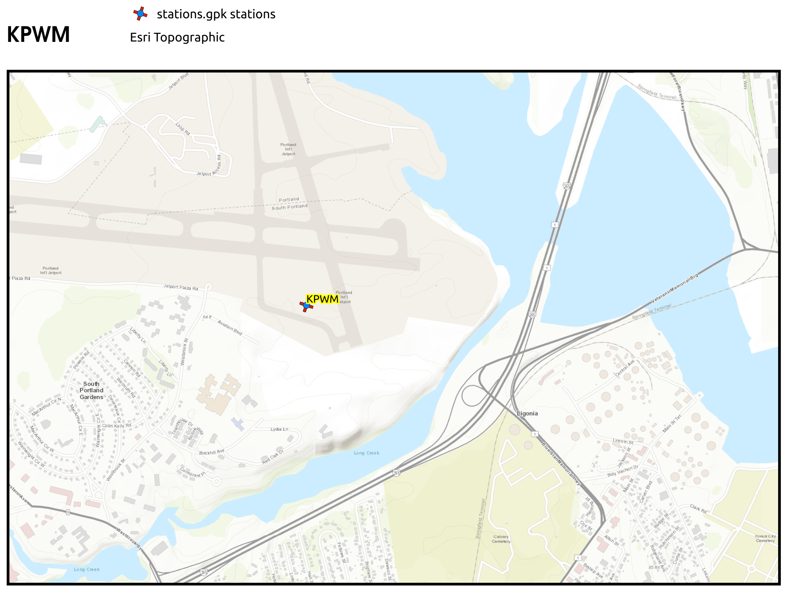

Temperatures Near Cumberland Center, Maine from Four Volunteer
Meteorological Stations
Data provided graciously by https://weather.gladstonefamily.net
and the Citizen Weather Observer
Program
The source code for collecting data and generating charts is here

Figure 1. Weekly air temperatures for the previous 12 weeks at the
four observation stations.
In all charts, Max Data is the latest measurement from the
database. This Week, or this whatever time period, is the
date the chart was generated. Variance between the two indicates
that either data for the current day is not available in the
database for some reason (if This Week is later than Max Data) or
someone went back in time and ran the chart scripts before the data
were loaded (if This Week is earlier than Max Data).

Figure 2. Yearly comparison of weekly average air temperatures at
station e4229

Figure 3. Yearly comparison of weekly average air temperatures at
station e1248

Figure 4. Yearly comparison of weekly average air temperatures at
station e4279

Figure 5. Yearly comparison of weekly average air temperatures at
station KPWM

Figure 6. Overview map displaying the relative positions of the
monitoring stations and the home base.
Two different elevations for each station are shown in the table.
Elevations from the US
National Elevation Dataset appear to be the most accurate.

Figure 7. Detailed map of monitoring location KPWM
Figure 8. Detailed map of monitoring location E4229
Figure 9. Detailed map of monitoring location E4279

Figure 10. Detailed map of monitoring location E1248